第一关 · 1942.3 登船撤离 · 每张：现状 / 历史原型 / 必须保留 / 可改 / 生成提示
先纠正一件事：L3 不是码头外景，是「登船」。167 张纹理里最大的一批
Boat* 全是船舱内部；名字是荷兰语——Romp=船体、
Ruim=货舱、Muur=舱壁、Buizen=管路。
关卡动线实际是：码头 → 舷侧 → 舷窗舱壁 → 货舱 → 文书室 → 机舱 → 上层甲板/驾驶室。
所以历史原型定为 仰光港登船撤离（1942 年 3 月），而不是一场码头攻防战—— 它的几何结构本来就是一次撤离。
一个省力的发现：L3 的底子已经是 1940 年代工业风。铆接钢板、铸铁缆桩、 砖砌岸壁、马灯、木桶、麻包——这些不需要"改结构"，需要的是换画法 （重彩国画）、换道具（军需物资）、去现代物。
要去掉的现代物（逐张确认过）：波纹金属集装箱（BoatRuim3 两垛、Quay_07 一只）、 罐车车身上的现代英文字体（Quay_05/06）、纯黄的游戏化光晕（Wheelhouse_01）。
为什么不是「面积前 14 张」。按绘制面积硬切，前 14 张里 13 张是同一个舱室的变体， 没有地标。这里改成按角色覆盖选：远景 ×2、吊车 ×2、码头岸壁 ×3、铆接舱壁 ×2、 舷窗舱壁 ×1、货舱 ×1、文书室 ×1、机舱 ×1、上层甲板 ×1。
共用提醒：Quay_* 被 L3/L4/L5 三关共用，Wheelhouse_01 被
L3/L4 共用——改一张三关一起变，必须同时验收。
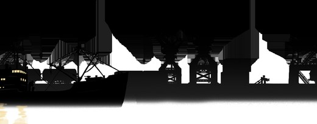
| painted | 0.15 Mpx |
|---|---|
| fill | 0.36 |
| 引用 | ×7 |
| order | -10…-2 |
| 来源 | sharedassets4.assets#166 |
纯黑港湾剪影：左侧是带桅杆与吊杆的蒸汽货轮，中间两台单臂吊车（吊钩垂下）夹一段仓库体块，右侧一艘驳船；底部一条水线反光。没有任何细节，全靠轮廓读数。
历史原型1942 年 3 月仰光河岸：蒸汽吊杆、货栈山墙、船桅、远处佛塔尖。
必须保留剪影的高低节奏与整体轮廓（它决定远景天际线的形状）；保持纯黑，不能出现明暗层次。
可改城市高楼换货栈与佛塔；吊杆改蒸汽吊；加烟囱与桅杆；轮廓边缘加极淡墨色晕染。
生成提示（配原图做 image-to-image）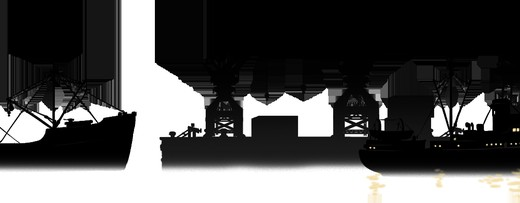
| painted | 0.12 Mpx |
|---|---|
| fill | 0.29 |
| 引用 | ×7 |
| order | -10…-2 |
| 来源 | sharedassets4.assets#22 |
同族剪影：左端一艘带桅杆吊杆的蒸汽船，中间两台单臂吊车夹一座仓库，右端又一艘船配一台吊车。比 _03 更疏、构件更大。
历史原型同上：仰光港的起重机与仓库群轮廓。
必须保留与 _03 保持同一套轮廓语言（两张叠在一起是同一片天际线）；保持纯黑。
可改同 _03；注意与 _03 的高低错开，不能重复同一个节奏。
生成提示（配原图做 image-to-image）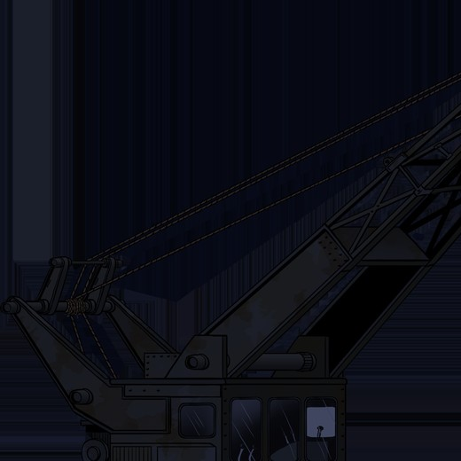
| painted | 0.33 Mpx |
|---|---|
| fill | 0.31 |
| 引用 | ×9 |
| order | -10…-1 |
| 来源 | sharedassets4.assets#215 |
单臂桁架吊车：吊臂斜向右上，钢索从臂顶垂向左侧滑轮组；底部是带三扇窗的操作室与机械舱，窗上有雨痕，金属深蓝近黑。
历史原型1940 年代港口的铆接桁架蒸汽/柴油吊车。
必须保留吊臂的角度与长度、操作室位置（整张图的构图骨架）；三扇窗的位置。
可改桁架加铆钉；加配重块、排烟管、操作室内的暖黄灯；钢索改麻绳配木滑轮组；金属加锈迹与水渍。
生成提示（配原图做 image-to-image）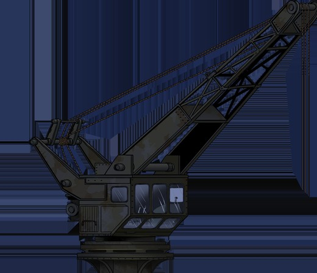
| painted | 0.24 Mpx |
|---|---|
| fill | 0.27 |
| 引用 | ×6 |
| order | -2…0 |
| 来源 | sharedassets4.assets#44 |
名字里的 lifeboats 与画面无关——这其实是另一台吊车：旋转式、圆形底座，吊臂斜向右上，操作室窗更大更清楚，同样有雨痕。
历史原型同 Crane-small_01：码头上的第二台吊车。
必须保留吊臂角度、圆形底座位置、操作室轮廓（与 Crane-small_01 是同一套构件，形制必须一致）。
可改与 Crane-small_01 同一套改造与配色；圆形底座加铆接与转盘齿圈。
生成提示（配原图做 image-to-image）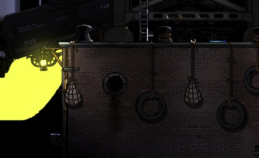
| painted | 0.53 Mpx |
|---|---|
| fill | 0.83 |
| 引用 | ×10 |
| order | -10…-1 |
| 来源 | sharedassets4.assets#139 |
砖砌岸壁横带：顶部两座铸铁缆桩，墙面挂绳编护舷与废轮胎，壁上一盏吊灯（暖黄光晕），还有圆形舷窗/通风格栅与落水管；岸上停着一节燃油罐车，车身有 FLAMMABLE FLUID 与 1926 字样。
历史原型仰光港砖石岸壁的系泊段：铸铁缆桩、粗麻缆绳、军需木箱与油桶。
必须保留岸壁高度与水平走向；**吊灯位置与光晕**（夜景的亮度分布靠它）；缆桩与护舷位置；罐车的位置与轮廓。
可改砖砌改风化的旧红砖与火山石混砌（灰缝清晰）；灯改马灯；轮胎护舷改绳编或木护舷；罐车车身去掉所有文字，只留斑驳旧漆与锈迹；加粗麻缆绳。
生成提示（配原图做 image-to-image）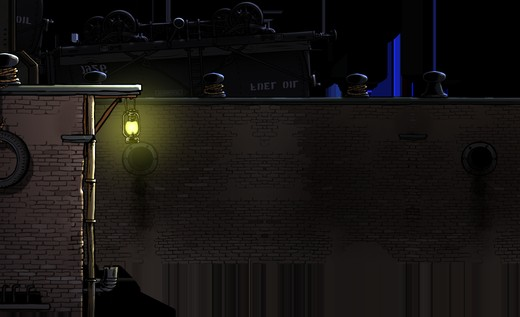
| painted | 0.45 Mpx |
|---|---|
| fill | 0.71 |
| 引用 | ×10 |
| order | -10…-1 |
| 来源 | sharedassets4.assets#42 |
砖砌岸壁：顶部两座缆桩，壁上一盏吊灯（绿黄光晕），左侧挂废轮胎，右侧墙面有圆形舷窗；背后是绞盘机械与一节油罐车（车身有镜像的 OIL / FIRE OIL 字样），墙上还有一块小铭牌。
历史原型同段岸壁的另一截：系泊绞盘与缆绳作业区。
必须保留与 Quay_05 一致的岸壁高度与灯位节奏（两张要能接缝拼接）；绞盘与罐车的轮廓。
可改同 Quay_05 的材质替换；铭牌去字改木牌；镜像英文去掉；绞盘改手摇/蒸汽绞盘（棘轮、手柄）。
生成提示（配原图做 image-to-image）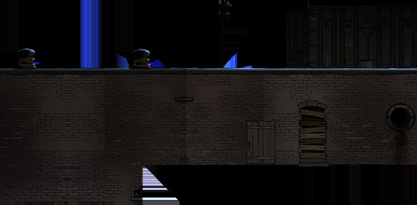
| painted | 0.34 Mpx |
|---|---|
| fill | 0.66 |
| 引用 | ×9 |
| order | -10…-1 |
| 来源 | sharedassets4.assets#13 |
砖砌岸壁：顶部两座缠着绳圈的缆桩、两只黑色油桶、一根带横杆的信号桅、一只货箱；墙面上有一个用木板封堵的拱窗、一扇拱形木板门、一个圆形舷窗与落水管。
历史原型仰光港岸壁的仓库门口：封堵的窗、厚重的木门、待运的军需物资。
必须保留岸壁高度；拱窗与拱门的位置（墙面的节奏点）；缆桩与信号桅的位置。
可改封堵拱窗的木板改钉死木条外加沙袋；拱门改厚木门配铁铰链；货箱改军需木箱（铁箍、不写字）；油桶保留（本来就是军需物）；信号桅改旗杆配信号灯；砖面加风化与盐渍。
生成提示（配原图做 image-to-image）一整片铆接钢板：成对铆钉排成纵列，顶部一条磨损的横梁，底部一道渐亮的光。没有舷窗、没有灯、没有道具——这张图唯一的细节就是铆钉。
历史原型运输船的铆接钢质舱壁/舷侧内壁。
必须保留铆钉的列距与行距（动了就变成另一块板）；顶部横梁位置；底部的明暗过渡。
可改钢板加锈迹、水渍、盐霜、焊缝；铆钉改略带高光的铸铁铆钉；加划痕与补漆块。
生成提示（配原图做 image-to-image）与 Romp02 同族的铆接钢板，铆钉列更疏，顶部横梁更亮一线。
历史原型同上：船体另一段舱壁。
必须保留与 Romp02 同一套材质与铆钉语言，保证两段能拼接。
可改同 Romp02；接缝处锈迹走向要对得上。
生成提示（配原图做 image-to-image）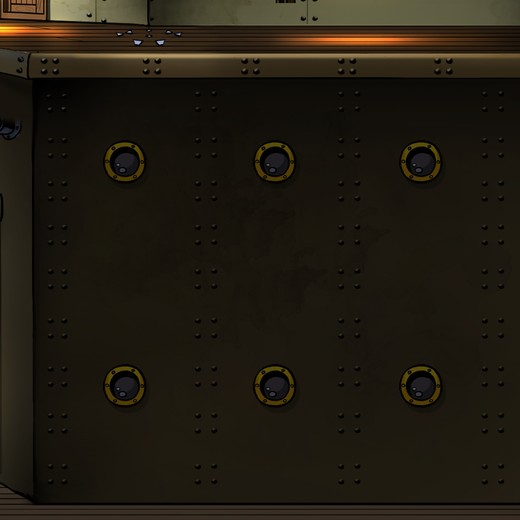
| painted | 1.05 Mpx |
|---|---|
| fill | 1.00 |
| 引用 | ×1 |
| order | 0 |
| 来源 | sharedassets4.assets#190 |
铆接钢板舱壁加六个黄铜舷窗（3×2 排布），舷窗有铜质压环；顶部是木质甲板边缘，透出暖光；左侧有金属框与一个线缆盘。
历史原型运输船客舱/货舱的舷窗舱壁。
必须保留六个舷窗的位置与间距（这是这张图的识别点）；顶部甲板边缘的高度；左侧金属框位置。
可改舷窗玻璃改厚玻璃（加深色反光）；铜环加铜绿；钢板加锈迹与水渍；顶部甲板改木条拼接。
生成提示（配原图做 image-to-image）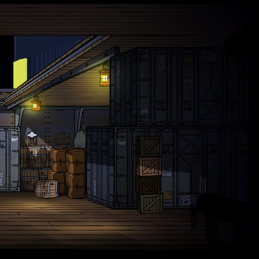
| painted | 1.01 Mpx |
|---|---|
| fill | 0.96 |
| 引用 | ×1 |
| order | 0 |
| 来源 | sharedassets4.assets#107 |
货舱/仓库：两垛深色**波纹金属货柜**、数只木桶、几摞麻包、一堆木箱，两盏挂灯（暖黄、光晕明显），木地板与木梁天花，左侧一扇金属门。
历史原型军需货舱：木箱垛、帆布覆盖的货垛、汽油桶、折叠担架。
必须保留货垛的体积与位置（构成空间遮挡）；两盏挂灯的位置与光晕；木地板与天花的高度。
可改**波纹金属货柜必须改掉**（1942 年没有集装箱）→ 木箱垛与帆布覆盖的货垛；木桶保留；麻包改帆布包；加折叠担架与铁箍弹药箱；挂灯改马灯。
生成提示（配原图做 image-to-image）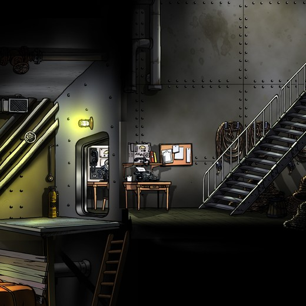
| painted | 1.05 Mpx |
|---|---|
| fill | 1.00 |
| 引用 | ×1 |
| order | 0 |
| 来源 | sharedassets4.assets#117 |
舱内办公室：铆接钢墙，左侧一个圆角舱口（带窗），中间一张木书桌，桌上有**打字机与纸张**，墙上一块**软木告示板**钉着纸，右侧盘绕的绳缆与一段带扶手的钢梯，左侧灭火器与管路，壁灯（绿黄光晕），木地板，左下角一架木梯。
历史原型运输船的文书室/报务室：随军文书、电台与作战命令。
必须保留书桌、告示板、钢梯、舱口的位置（玩家动线与空间关系）；壁灯位置与光晕。
可改打字机保留（1940 年代成立）；告示板的纸改军用地图与命令纸；桌面加野战电话与耳机；绳缆保留；灭火器改黄铜外壳；木地板加磨损。
生成提示（配原图做 image-to-image）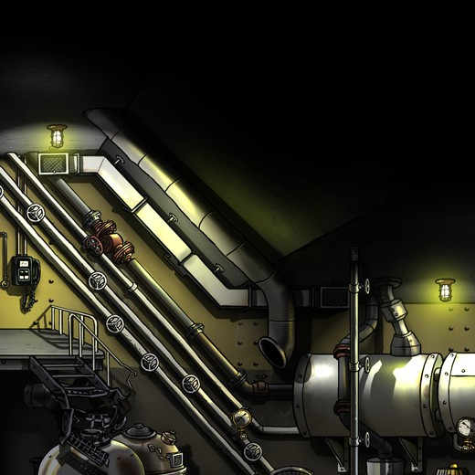
| painted | 1.05 Mpx |
|---|---|
| fill | 1.00 |
| 引用 | ×1 |
| order | 0 |
| 来源 | sharedassets4.assets#64 |
机舱：斜向布置的粗大管道（带法兰与阀门手轮）、右侧一只大型圆筒储罐/锅炉、左侧带栏杆的走道与钢梯、壁灯（黄绿光晕）、仪表与通风格栅。
历史原型运输船的机舱/锅炉舱：蒸汽管路、锅炉、压力表、煤堆。
必须保留管道的走向与法兰位置、储罐的体量与位置、走道与梯子的位置（动线）；壁灯位置。
可改管道加保温缠布与锈迹；阀门改铸铁手轮；加压力表、蒸汽阀与煤堆；储罐加铆接接缝；灯光压暖。
生成提示（配原图做 image-to-image）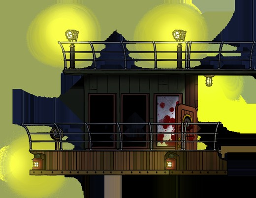
| painted | 0.38 Mpx |
|---|---|
| fill | 0.46 |
| 引用 | ×2 |
| order | 0 |
| 来源 | sharedassets4.assets#92 |
上层甲板与驾驶室外：绿色木板舱室，三个深色门窗（其中一扇门上有**红色血迹喷溅**），钢管栏杆，两盏**大光晕灯**——光晕是直接烘在贴图里的，面积很大、纯黄；下层甲板木地板与两盏小灯，右侧垂挂一只灯笼。
历史原型运输船的驾驶室与上层甲板：木框窗、车钟、罗经、救生圈。
必须保留门窗位置与舱室轮廓；**两盏大灯的灯芯位置**（光晕可以调小，位置不能动）；栏杆与甲板高度。
可改绿漆木板改原木/旧绿漆；钢管栏杆改木扶手配钢索；大灯光晕由纯黄改暖橙并降饱和；门上血迹改弹孔与熏黑（避免过血腥）；加救生圈与车钟剪影。
生成提示（配原图做 image-to-image）| # | 纹理 | 角色 | 尺寸 | painted | 引用 | 共用 |
|---|---|---|---|---|---|---|
| 01 | HarbourParallax1_03 | 远景天际线（最远视差层，order −10） | 1024×400 | 0.15 M | ×7 | L4/L5 |
| 02 | HarbourParallax1_02 | 远景天际线（第二层视差，order −10） | 1024×400 | 0.12 M | ×7 | L4/L5 |
| 03 | Crane-small_01 | 单臂吊车（order −10…−2） | 1024×1024 | 0.33 M | ×9 | L4/L5 |
| 04 | Crane-lifeboats_01 | 第二台吊车（旋转式，order −2…0） | 1024×881 | 0.24 M | ×6 | L4 |
| 05 | Quay_05 | 码头岸壁 · 系泊段（L3/L4/L5 共用，order −10…−2） | 1024×624 | 0.53 M | ×10 | L4/L5 |
| 06 | Quay_06 | 码头岸壁 · 绞盘段（L3/L4/L5 共用，order −10…−1） | 1024×624 | 0.45 M | ×10 | L4/L5 |
| 07 | Quay_07 | 码头岸壁 · 仓库门口段（L3/L4/L5 共用，order −10…−1） | 1024×504 | 0.34 M | ×9 | L4/L5 |
| 08 | Romp02 | 铆接钢舱壁（前景，order 10） | 1024×693 | 0.69 M | ×5 | — |
| 09 | Romp04 | 铆接钢舱壁（前景变体，order 10） | 1024×693 | 0.69 M | ×3 | — |
| 10 | Boat017b | 舷窗舱壁（order 0） | 1024×1024 | 1.05 M | ×1 | — |
| 11 | BoatRuim3 | 货舱（order 0） | 1024×1024 | 1.01 M | ×1 | — |
| 12 | Boat010b | 文书室/报务室（order 0） | 1024×1024 | 1.05 M | ×1 | — |
| 13 | Boat008a | 机舱/锅炉舱（order 0） | 1024×1024 | 1.05 M | ×1 | — |
| 14 | Wheelhouse_01 | 上层甲板/驾驶室（L3/L4 共用，order 0） | 1024×794 | 0.38 M | ×2 | L4 |
14 张合计 8.1 Mpx，占 L3 全关（42.1 Mpx）的 19%。按 5–10 credits/张，这一关的地标重绘是 70–140 credits。
其余 153 张走 T2 材质 / T3 道具的程序化路线，0 credits——但需要先把
restyle_scene 做出来。它是整个方案的成本支点。
数据：art/scene_inventory.json · 机器可读版：art/l3_brief.json · 清单：docs/SCENE_LAYERS.html · 全局方案：docs/SCENE_PLAN.html